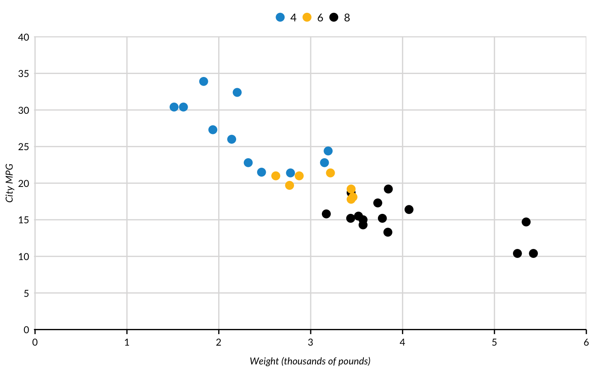

vignettes/introducing-urbnthemes.Rmd
introducing-urbnthemes.Rmdurbnthemes is a set of tools for creating Urban Institute-themed plots and maps in R. The package extends ggplot2 with print and map themes as well as tools that make plotting easier at the Urban Institute. urbnthemes replaces the urban_R_theme.
A comprehensive set of examples is available at the Urban Institute R Users Group website.
The Urban Institute uses Lato font for publications. After installing urbnthemes, submit urbnthemes::lato_test() to see if Lato is imported and registered.
If Lato isn’t imported and registered, install Lato and then submit urbnthemes::lato_install(). If you are on a Windows, you may need to install ghostscript and then submit Sys.setenv(R_GSCMD = "link to the ghostscript .exe") before running urbnthemes::lato_install().
Waffle charts with glyphs require fontawesome. fontawesome_test() and fontawesome_install() are the fontawesome versions of the above functions. Be sure to install fontawesome from here.
Always load library(urbnthemes) after library(ggplot2) or library(tidyverse).
library(ggplot2)
library(urbnthemes)
set_urbn_defaults(style = "print")
ggplot(data = mtcars, mapping = aes(factor(cyl))) +
geom_bar() +
scale_y_continuous(expand = expand_scale(mult = c(0, 0.1))) +
labs(x = "Number of Cylinders",
y = "Count") +
remove_ticks()ggplot(data = mtcars, mapping = aes(x = wt, y = mpg)) +
geom_point() +
scale_x_continuous(expand = expand_scale(mult = c(0.002, 0)),
limits = c(0, 6),
breaks = 0:6) +
scale_y_continuous(expand = expand_scale(mult = c(0, 0.002)),
limits = c(0, 40),
breaks = 0:8 * 5) +
labs(x = "Weight (thousands of pounds)",
y = "City MPG") +
scatter_grid()ggplot(data = mtcars, aes(x = wt, y = mpg, color = factor(cyl))) +
geom_point() +
scale_x_continuous(expand = expand_scale(mult = c(0.002, 0)),
limits = c(0, 6),
breaks = 0:6) +
scale_y_continuous(expand = expand_scale(mult = c(0, 0.002)),
limits = c(0, 40),
breaks = 0:8 * 5) +
labs(x = "Weight (thousands of pounds)",
y = "City MPG") +
scatter_grid() ## Branding
library(ggplot2)
library(urbnthemes)
library(grid)
library(gridExtra)
set_urbn_defaults()
plot <- ggplot(data = mtcars, mapping = aes(factor(cyl))) +
geom_bar() +
scale_y_continuous(expand = expand_scale(mult = c(0, 0.1))) +
labs(x = "Number of Cylinders",
y = "Count") +
remove_ticks()
grid.arrange(plot, urbn_logo_text(), ncol = 1, heights = c(30, 1))Core themes:
Formatting functions:
urbn_logo_text()remove_ticks()remove_axis()scatter_grid()add_axis()urbn_geofacetUtility functions:
In development:
undo_urbn_defaults()save_urbn_print()urbnthemes contains many quick-access color palettes from the Urban Institute Data Visualization Style Guide. These palettes can be used to quickly overwrite default color palettes from urbnthemes.
palette_urbn_main is the eight color discrete palette of the Urban Institute with cyan, yellow, black, gray, magenta, green, space gray, and red.palette_urbn_diverging is an eight color diverging palette.palette_urbn_quintile is a five color blue palette that is good for quintiles.palette_urbn_politics is a two color palette with blue for Democrats and red for Republicans.There are seven palettes that are continuous palettes of the seven unique colors in the discrete Urban Institute color palette:
palette_urbn_cyanpalette_urbn_graypalette_urbn_yellowpalette_urbn_magentapalette_urbn_greenpalette_urbn_spacegraypalette_urbn_redAll color palettes are listed in the documentation for any color palette. Simply submit ?<palette name> to see a list of all palettes. Furthermore, all palettes begin with palette_urbn_* so autocomplete can be used to quickly explore the entire list of palettes.
The vectors can be subset using base R syntax.
## cyan yellow black gray
## "#1696d2" "#fdbf11" "#000000" "#d2d2d2"## [1] "#d5d5d4" "#adabac" "#848081" "#5c5859" "#332d2f"